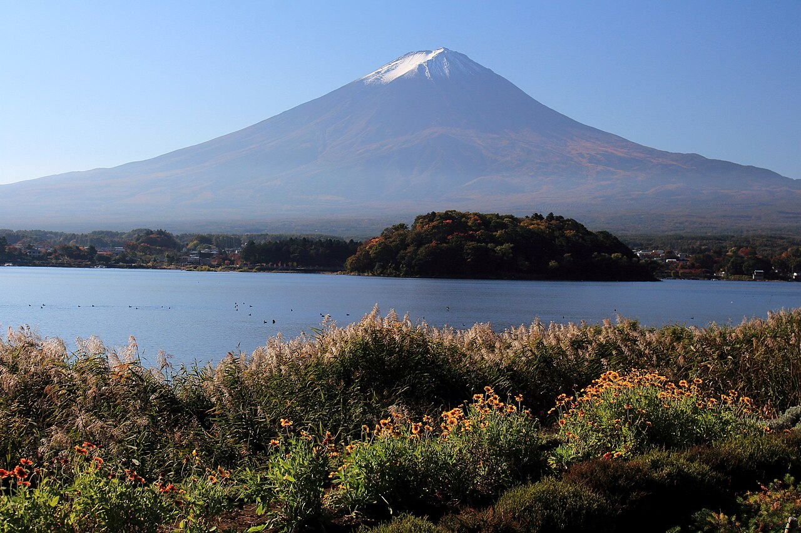

01

東京 TOKYO鎌倉 KAMAKURA
河口湖 KAWAGUCHIKO
5 日 / 4 晚東京兩晚・富士山區兩晚
2 人・雙床房東京約 HK$500・富士山酒店低於 HK$1,000
Day 3 開始自駕新宿取車・成田還車
日本時間 JST比香港快 1 小時
行程草案，未有預訂。酒店、租車及航班時間待確認；導航起終點需按最終酒店調整。更新：2026-11-06。
THE FIVE-DAY JOURNEY
每日點樣行？
DAY 01 / 11.08 星期日
落地東京，慢慢嚟
今日只做三件事：入境、入住、食好啲。留返精神，聽日先正式行街。
DAY 02 / 11.09 星期一
由森林行到城市夜色
一路向南行，唔來回兜圈。上午神宮、下午購物，傍晚留畀澀谷。
日本時間 JST計劃時間 · 可彈性調整
01
早餐、準備出門
酒店未定；按最終地址調整出門時間，目標09:30到明治神宮。
02
03
04
05
06
07
08
09
10
11
12
13
返酒店
今晚整理行李，聽朝退房後唔再返東京酒店。
14
執行李、確認租車資料
確認取車地址、營業時間、行李容量及異地還車。所有酒店與租車仍屬候選。
DAY 03 / 11.10 星期二
鎌倉海風，再駛入富士山
今日行程最緊湊。鎌倉只集中長谷一帶，江之島行前段，留足時間入河口湖。
日本時間 JST計劃時間 · 可彈性調整
01
02
03
04
05
06
07
08
09
10
返停車場、洗手間、出發
15:30為最遲離開目標，預早準備車上飲用水。
11
前往河口湖
連休息及交通緩衝預約3小時15分鐘；途中服務區休息20–30分鐘，依即時導航選擇。
12
河口湖酒店入住｜未預訂
地圖⑤暫用河口湖大橋一帶；揀定酒店後先用正式地址導航。確認酒店停車安排。
13
14
返酒店休息
睇聽朝天氣，準備保暖外套同早起影富士山。
DAY 04 / 11.11 星期三
富士山、湖畔與秋日紅葉
將遠眺富士山放喺朝早，下午沿湖慢慢行。天氣唔配合就減纜車，保留湖邊散步。
日本時間 JST計劃時間 · 可彈性調整
01
早餐、準備出門
早餐供應按最終酒店為準；未開餐就前一晚準備。保暖外套、飲水、舒服鞋。
02
03
04
05
06
07
08
09
10
咖啡、甜品、休息
大石公園附近揀店，預算每人¥800–1,500；留返黃昏精神。
11
12
13
返回湖南岸
天黑慢駛；先決定晚餐，避免反覆繞湖。
14
15
返酒店執行李
確認成田還車營業所、入油規則及接駁；聽朝07:30出發，唔再加景點。
DAY 05 / 11.12 星期四
預早出發，鬆動返機場
今日重點係準時到機場。將休息、加油、還車同接駁全部計入，唔安排額外觀光。
日本時間 JST計劃時間 · 可彈性調整
01
早餐、退房、檢查行李
07:30準時離開。地圖①係河口湖住宿區參考，出發點按最終酒店。
02
往成田方向行車
跟即時交通選高速公路；總共預約4小時行車、休息與交通緩衝。
03
服務區休息
洗手間、飲水、簡單小食；休息位置依實際高速路線，唔預設固定服務區。
04
繼續前往成田區
如塞車延誤，先取消坐低食午餐，保留還車及機場手續時間。
05
按租車規則加油
選營業所附近油站；核對油種、保留單據。實際要求以租車訂單為準。
06
07
08
09
安檢、出境
按航空公司截關時間及現場排隊情況提早；先過關再購物。
10
確認閘口、飲水、小休
閘口可能較遠，先行到附近。
11
到閘口等候登機
以登機證顯示時間為準；16:50只係暫定航班時間，並非已確認。
STAY WELL
住兩間，唔使日日搬。
東京 11/8 入住、11/10 退房；河口湖／富士吉田 11/10 入住、11/12 退房。兩個男人一房，選 Twin／兩張床／禁煙／私人浴室。東京目標每房每晚約 HK$500；富士山區要求每房每晚含稅低於 HK$1,000，只選酒店、雙床及私人浴廁；唔選民宿、宿舍、整棟屋或小屋。呢啲係預算，唔係已核實報價。每區只揀一間連住兩晚；原有兩間富士山酒店已按你查詢結果標示滿房。
東京 · 11/8–10 · 2晚
相鐵 Fresa Inn 東新宿站前
Twin 約21–24㎡ · 兩張120cm床
東京優先比較：近東新宿站，房型較適合兩人分床。前往新宿南口取車要另預交通時間。
目標 HK$500／房／晚；指定日期雙床價未核實，可能超預算。
東京 · 11/8–10 · 2晚
相鐵 Fresa Inn 東京東陽町
Twin 約21.1㎡ · 兩張120cm床
備選：有正常雙床房。距原宿、澀谷及新宿取車點較遠，只有房價明顯較低先值得轉區。官方部分頁面目前維護中，訂房前再確認。
目標 HK$500／房／晚；未核實房價及房量。
河口湖 · 11/10–12 · 2晚
Asia Hotel 河口湖／アジアホテル河口湖
11/6 查詢有房 · 未預訂
禁煙 Twin 約25㎡ · 兩張單人床 · 私人浴廁
符合酒店住宿要求；Booking.com評分8.0／46則，免費私人泊車。查詢兩成人、一房、11/10入住及11/12退房，頁面可選1間。免費取消期限顯示11/10 18:00前；以最終訂房條款為準。
兩晚HK$1,215＋頁面列10% VAT，估算總額約HK$1,337，平均每晚約HK$669。屬查詢時報價，未鎖房；最終稅費及匯率以結算為準。
富士吉田 · 11/10–12 · 2晚
Fujisan Station Hotel 富士山站酒店
指定日期官網無雙床空房
禁煙 Twin 21㎡ · 兩張120cm床
優先比較：富士山站步行約2分鐘，免費早餐及35個免費車位。揀普通Twin，避免床貼埋嘅Hollywood Twin。去河口湖需揸車；早出發日可預先準備早餐。
2026/11/6 查官方庫存：11/10及11/11均無可訂雙床房；唔作今次可訂推薦。
富士吉田 · 11/10–12 · 2晚
Resort Inn 芙蓉 河口湖 Inter
指定日期官網無雙床空房
禁煙標準 Twin 21.5㎡ · 兩張semi-double床
自駕實用候選：普通車免費泊車、住客可用附設大浴場；房內有私人淋浴及廁所。選標準Twin；16.2㎡ Petit Twin係一張床加額外床。偏實用商務風格，唔係新式精品酒店。早餐是否包按方案確認。
2026/11/6 查官方庫存：11/10及11/11均無可訂雙床房；唔作今次可訂推薦。
河口湖 · 11/10–12 · 2晚
東橫 INN 富士河口湖大橋
滿房 · 按旅客查詢結果
須選禁煙 Twin · 唔好揀 Double
自駕預算候選，基本商務風格。官方列免費停車位、先到先得；入住前確認早餐及停車安排。
11/10–12 已由旅客回報滿房；保留資料作記錄，今次唔作可訂候選。
富士吉田 · 11/10–12 · 2晚
West Inn 富士吉田
滿房 · 按旅客查詢結果
Twin 約19–25㎡ · 兩張semi-double床
富士山區另一選擇，有停車安排，地段有便利店。離湖邊較遠，Day 4要按位置微調出門時間。
11/10–12 已由旅客回報滿房；保留資料作記錄，今次唔作可訂候選。
BEFORE YOU GO
出發前，搞掂呢幾樣。
唔洗一次過記晒，呢頁可以留喺手機。
勾選只保存在呢部裝置，唔會同步畀其他人。
圖片、地圖來源與使用說明
景點照片只作參考，唔代表出發當日天氣、紅葉或花況。照片縮放及版面裁切，按 CC BY-SA 4.0 分享。
- 大石公園遠眺富士山 — Alpsdake · CC BY-SA 4.0
- 澀谷夜色 — Landry Miguel · CC BY-SA 4.0
- 鎌倉大佛 — Daniel M. Dobkin · CC BY-SA 4.0
- 地圖底圖 © OpenStreetMap contributors，路線與標註為本行程編排。地圖為靜態位置示意，非導航或即時交通資料。
旅行安排為規劃建議；營業、票價、交通及活動可能調整，出發前查看官方。住宿資料來源為酒店官方房型／設施頁，並非即時房價。